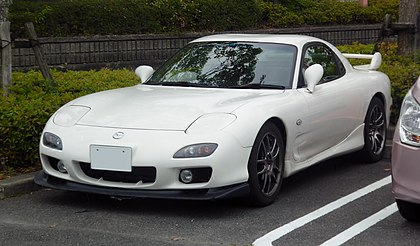

Wat is de mazda RX-7 FD
aanleiding
De Japanse autoindustrie is lange tijd het lachertje geweest. Niet zozeer vanwege de vermeende lage kwaliteit, maar vanwege hun schattige ‘kopieerdrang’ en bijpassende naamgeving. Een beetje zoals we nu naar Chinese merken kijken anno 2018. Mazda was al een tijdje bezig met de wankelmotor. Op dit moment is er geen enkele auto met een wankelmotor, dus waarom was het destijds een gouden zet? Simpel: belastingen. Toen de Mazda ingenieurs lucht kregen van het principe van de rotatiemotor, waren ze geïnteresseerd. Mazda ging in overleg met NSU (die patenthouder van de rotatiemotor) voor licentierechten. Vervolgens vlogen ze terug naar Japan om daar de motoren zo betrouwbaar mogelijk te maken. Dat had overigens nogal wat voeten in de aarde.
uniek aan deze auto
- Roterie-motor (dorito motor)
- zeldzaam
- auto was zeer indrukwekkend in zij teid